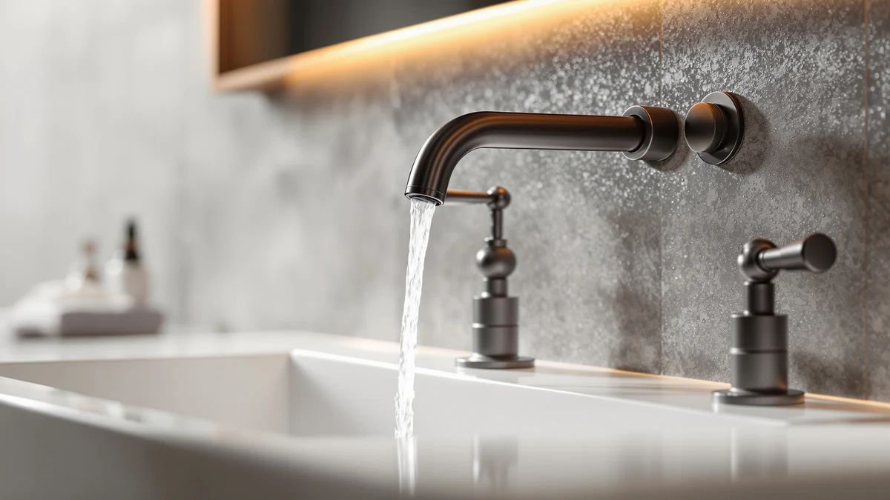

How to Clean Bronze Bathroom Faucets: Complete Guide (2026)
Prices and picks verified as of September 2026. Independent, reader-supported reviews.


Things to Know Before You Buy
- Most bronze faucets use a living finish, not a sealed one. Oil-rubbed bronze fixtures, including the Moen Eva we reviewed separately, are typically left unlacquered on purpose so the color deepens with age. That means the finish reacts directly to whatever cleaner touches it, which is the main reason to clean bronze bathroom faucets differently than brass or chrome.
- Skip vinegar and other acidic cleaners. Vinegar works well on brass and chrome faucets, but it can strip a living bronze finish unevenly, leaving lighter patches where it sat longest.
- Baking soda paste and other abrasives are too rough for bronze. The gritty texture that's mild enough for plated brass or chrome can dull the sheen on an unsealed living finish over repeated cleanings.
- Daily upkeep matters more on bronze than on other finishes. A 30-second wipe after each use prevents most water spots, especially in hard water homes, so the deeper clean in this guide only needs to happen every two to four weeks.
Knowing how to clean bronze bathroom faucets the right way starts with recognizing what you're working with. Most bronze fixtures sold today use an oil-rubbed or living finish instead of a sealed coating like lacquer or PVD. That finish is left unsealed so its color deepens naturally with age, but it also reacts directly to whatever touches it, which means the wrong cleaner can strip patina unevenly in a single pass.
This guide walks through five steps built around that living finish, from a plain rinse to a protective oil coat at the end. Skip the vinegar soaks and baking soda pastes that work fine on brass or chrome, since acidic and abrasive products are exactly what oil-rubbed bronze manufacturers warn against. Follow the order below and you'll clear soap scum and water spots in under half an hour, without lightening the finish or leaving blotchy patches.
What You'll Need
- Supplies: mild dish soap, distilled water, and a mineral oil or bronze-safe wax for the finish
- Tools: a soft microfiber cloth and a soft-bristle toothbrush, the two tools you need to clean bronze bathroom faucets without scratching the living finish
Step 1: Clear the faucet and rinse away loose debris
Start by clearing the counter around the faucet. Move soap dispensers, toothbrush holders, and anything else blocking access to the base, spout, and handles.
Run warm water over the entire faucet for about 30 seconds. This first rinse loosens toothpaste splatter, soap residue, and dust before you introduce any cleaner, so you're not grinding grit into the finish during the next step.
If you're cleaning bronze bathroom faucets that haven't been wiped down in a while, the water may run cloudy at first. That's normal, and it means the rinse is doing its job before the soap wash that follows.
Step 2: Wash with warm water and mild dish soap
Mix a few drops of mild dish soap into a bowl of warm water. Dip a soft microfiber cloth into the solution and wring it out so it's damp, not dripping, since excess water can pool in seams and dry into new spots.
Wipe the spout, handles, and base in one direction rather than scrubbing back and forth. Rinse the cloth often so you're not redepositing grime you already lifted off the surface.
This step handles most everyday buildup: fingerprints, soap film, and light dust. Save anything stronger for step three, since a living bronze finish rarely needs more than soap and water to clean bronze bathroom faucets on a regular basis.
Step 3: Spot-clean water spots without vinegar or acidic cleaners
For hard water spots or dried soap film, resist the instinct to reach for vinegar. That's the go-to fix for brass and chrome, but bronze's living finish absorbs acid unevenly across the surface, and even a short soak can leave lighter patches where the cleaner sat longest.
Instead, dampen a fresh section of your microfiber cloth with plain warm water and work it directly over the spot using light pressure. Give it a second pass if the deposit doesn't lift right away, and add a drop of mild dish soap only if plain water isn't enough.
Patience matters more than pressure here. Whenever you clean bronze bathroom faucets, gentle repeated passes protect the patina better than one aggressive scrub, and stubborn spots almost always come off with a second or third try.
Step 4: Scrub tight seams with a barely damp soft-bristle toothbrush
Grime collects fastest in the gaps a cloth can't reach: the seam where the spout meets the base, the underside of the handles, and the threading around the aerator. A soft-bristle toothbrush gets into those spaces without the abrasive edge of baking soda paste, which is too rough for a living finish.
Dip the toothbrush in plain water, or water with a drop of dish soap, and work it gently in small circles. Check your progress every few passes so you're lifting grime, not wearing at the surface.
This is the step people skip when they clean bronze bathroom faucets, and it's usually why grime reappears within a week. A couple of extra minutes here keeps the deeper buildup from creeping back.
Step 5: Rinse, dry immediately, and apply a protective coat
Rinse the entire faucet with clean water to remove every trace of soap. Leftover residue attracts new dust and can dry into a hazy film on a living finish faster than on chrome or lacquered brass.
Dry the faucet immediately with a clean microfiber cloth instead of letting it air dry. Water left to evaporate on its own leaves new spots and undoes the work from the previous steps, especially on unsealed bronze.
Finish with a thin coat of mineral oil or a wax made for living metal finishes, buffed in with a dry cloth. This last pass is what separates a clean bronze bathroom faucet from one that stays clean, since the thin oil layer repels new water spots and evens out the patina between cleanings.
Common Mistakes to Avoid
The most common mistake is reaching for vinegar or another acidic cleaner because it worked on a different faucet. Vinegar is a reliable fix for brass and chrome, but a living bronze finish absorbs it unevenly, and even a few minutes of contact can strip color from one section while leaving the rest untouched.
A close second is scrubbing with baking soda paste or anything else abrasive. Baking soda is mild enough for plated finishes, but it's still gritty enough to dull the sheen on unsealed bronze over repeated cleanings, and once that texture changes, no amount of buffing brings it back evenly.
Skipping the final oil or wax coat is another frequent error. Without it, a bronze faucet you cleaned an hour earlier develops new water spots within days, which means you're back to cleaning bronze bathroom faucets again almost immediately instead of every few weeks.
Letting the faucet air dry causes similar problems. Water left to evaporate on its own leaves mineral spots behind, undoing the rinse step you finished moments earlier.
Finally, people often mix cleaning products out of habit, combining dish soap with a household surface cleaner or glass spray. Stick to the supplies in this guide and rinse thoroughly between steps, since unfamiliar chemical combinations are the fastest way to discolor a finish you can't fully restore.
Our Top Picks
If cleaning your bronze bathroom faucet doesn't bring back the look you want, or you're ready for a different finish altogether, these three options cover a range of styles and budgets.

Editor’s Pick
Bathroom Faucet 3 Hole Brushed
A 3-hole widespread faucet with a brushed finish that hides fingerprints and water spots better than a living bronze finish does, a practical swap if daily upkeep isn't for you.
$89.98
Check Price on Amazon
Best Value
Greenspring Chrome Touchless Bathroom Sink
A touchless chrome faucet that activates with a wave of your hand, cutting down on the fingerprints and soap residue that build up fastest around handles.
$49.99
Check Price on Amazon
Premium Choice
Greenspring Touchless Bathroom Sink Faucet
A step up in touchless design with a sturdier base, worth the extra cost if you want hands-free convenience without downgrading build quality.
$65.99
Check Price on AmazonFrequently Asked Questions
How often should you clean a bronze bathroom faucet?
Wipe it down after every use if you can, and run through the full five-step routine every two to four weeks depending on your water hardness. Homes with hard water need the deeper clean more often, since mineral deposits show up faster on a living finish.
Can you use vinegar on a bronze bathroom faucet?
It's best to avoid it. Vinegar's acidity works well on brass and chrome faucets, but it can strip color unevenly from an oil-rubbed or living bronze finish, leaving lighter patches where it sat longest. Stick with plain water and mild dish soap instead.
What should you avoid when you clean bronze bathroom faucets?
Skip vinegar, ammonia, bleach, and abrasive powders or pads, since all of them react with an unsealed living finish. Baking soda paste, which works on other finishes, is also too gritty for bronze over repeated cleanings.
Why does my bronze faucet look patchy after cleaning?
Patchy or blotchy color almost always means an acidic or abrasive cleaner touched the finish unevenly. Living bronze develops its patina from exposure over time, so any product that strips it does so unevenly across the surface rather than all at once.
Is bronze harder to keep clean than other faucet finishes?
It takes a gentler approach, not necessarily more effort. Bronze shows water spots less than chrome, but reviewers who own living-finish faucets consistently report that a quick wipe after each use and an occasional light oil coat keep it looking even, with less scrubbing than a heavily tarnished brass fixture needs.
Verdict
Learning how to clean bronze bathroom faucets comes down to matching your method to a living finish instead of a sealed one. Rinse, wash with mild soap, spot-clean water spots with plain water instead of vinegar, work tight seams with a barely damp toothbrush, then dry and finish with a light oil or wax coat. That five-step routine protects the patina instead of stripping it, and it takes less than half an hour once you've done it a couple of times.
Skip the shortcuts that work on other finishes. Vinegar soaks, baking soda pastes, and letting the faucet air dry cause more damage to bronze than the water spots they're meant to remove. A soft cloth, a soft-bristle toothbrush, and a small bottle of mineral oil are all you need.
If your faucet's finish is too far gone to bring back, check the picks above, including the brushed Hurran faucet featured as our editor's pick, and see budget options before you buy a full replacement.